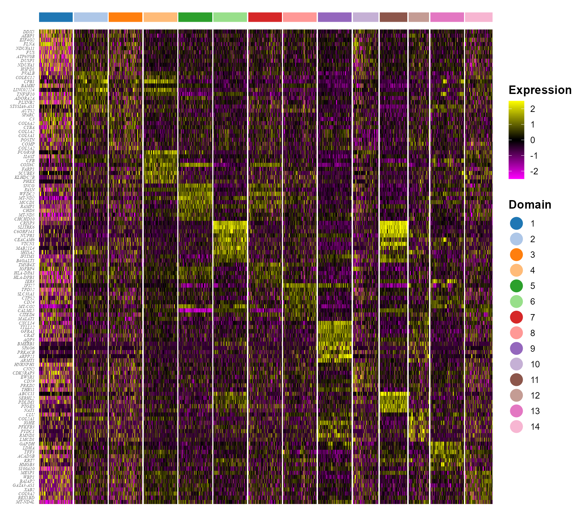

PRECAST: Human Breast Cancer Data Analysis
Wei Liu
2025-09-29
Source:vignettes/PRECAST.BreastCancer.Rmd
PRECAST.BreastCancer.RmdThis vignette introduces the PRECAST workflow for the analysis of integrating multiple spatial transcriptomics datasets. The workflow consists of three steps
- Independent preprocessing and model setting
- Probabilistic embedding, clustering and alignment using PRECAST model
- Downstream analysis (i.e. visualization of clusters and embeddings, combined differential expression analysis)
We demonstrate the use of PRECAST to two sliced human breast cancer Visium data that are here, which can be downloaded to the current working path by the following command:
githubURL <- "https://github.com/feiyoung/PRECAST/blob/main/vignettes_data/bc2.rda?raw=true"
download.file(githubURL, "bc2.rda", mode = "wb")Then load to R
load("bc2.rda")Download data from 10X: another method to access data
This data is also available at 10X genomics data website:
- Section1: https://support.10xgenomics.com/spatial-gene-expression/datasets/1.1.0/V1_Breast_Cancer_Block_A_Section_1
- Section2: https://support.10xgenomics.com/spatial-gene-expression/datasets/1.1.0/V1_Breast_Cancer_Block_A_Section_2
Users require the two folders for each dataset: spatial and filtered_feature_bc_matrix. Then the data can be read by the following commond.
dir.file <- "Section" ## the folders Section1 and Section2, and each includes two folders spatial and filtered_feature_bc_matrix
seuList <- list()
for (r in 1:2) {
message("r = ", r)
seuList[[r]] <- DR.SC::read10XVisium(paste0(dir.file, r))
}
bc2 <- seuListThe package can be loaded with the command:
View human breast cancer Visium data from
DataPRECAST
bc2 ## a list including two Seurat object
#> [[1]]
#> An object of class Seurat
#> 36601 features across 3798 samples within 1 assay
#> Active assay: RNA (36601 features, 0 variable features)
#> 2 layers present: counts, data
#>
#> [[2]]
#> An object of class Seurat
#> 36601 features across 3987 samples within 1 assay
#> Active assay: RNA (36601 features, 0 variable features)
#> 2 layers present: counts, dataCheck the content in bc2
head(bc2[[1]])
#> orig.ident nCount_RNA nFeature_RNA spot
#> CACGATTGGTCGTTAA-1 SeuratProject 6853 3026 CACGATTGGTCGTTAA-1
#> GGTTGTATCGTGAAAT-1 SeuratProject 8679 3646 GGTTGTATCGTGAAAT-1
#> TCTTATGGGTAGTACC-1 SeuratProject 5093 2449 TCTTATGGGTAGTACC-1
#> TACAAGCTGTTCACTG-1 SeuratProject 9432 3708 TACAAGCTGTTCACTG-1
#> GTATCTTGTTGCTCAC-1 SeuratProject 8610 3512 GTATCTTGTTGCTCAC-1
#> ATACCAGGTGAGCGAT-1 SeuratProject 9974 3901 ATACCAGGTGAGCGAT-1
#> CCTAAACAGGGTCCGT-1 SeuratProject 7232 3173 CCTAAACAGGGTCCGT-1
#> ATGGTGCTCAAAGCCA-1 SeuratProject 6025 2867 ATGGTGCTCAAAGCCA-1
#> CAAATGCGGAGTGTTC-1 SeuratProject 8822 3678 CAAATGCGGAGTGTTC-1
#> CGTGCCCGACATTTGT-1 SeuratProject 6364 2932 CGTGCCCGACATTTGT-1
#> in_tissue row col imagerow imagecol
#> CACGATTGGTCGTTAA-1 1 0 50 4046 10350
#> GGTTGTATCGTGAAAT-1 1 1 51 4284 10486
#> TCTTATGGGTAGTACC-1 1 0 52 4047 10623
#> TACAAGCTGTTCACTG-1 1 1 53 4285 10759
#> GTATCTTGTTGCTCAC-1 1 0 54 4047 10896
#> ATACCAGGTGAGCGAT-1 1 1 55 4285 11032
#> CCTAAACAGGGTCCGT-1 1 0 56 4048 11169
#> ATGGTGCTCAAAGCCA-1 1 1 57 4286 11305
#> CAAATGCGGAGTGTTC-1 1 0 58 4048 11442
#> CGTGCCCGACATTTGT-1 1 1 59 4286 11578Create a PRECASTObject object
We show how to create a PRECASTObject object step by step. First, we
create a Seurat list object using the count matrix and meta data of each
data batch. Although bc2 is a prepared Seurat list object,
we re-create it to show the details of the Seurat list object. At the
same time, check the meta data that must include the spatial coordinates
named “row” and “col”, respectively. If the names are not, they are
required to rename them.
## Get the gene-by-spot read count matrices countList <- lapply(bc2, function(x)
## x[['RNA']]@counts)
countList <- lapply(bc2, function(x) {
assay <- DefaultAssay(x)
GetAssayData(x, assay = assay, slot = "counts")
})
M <- length(countList)
## Get the meta data of each spot for each data batch
metadataList <- lapply(bc2, function(x) x@meta.data)
for (r in 1:M) {
meta_data <- metadataList[[r]]
all(c("row", "col") %in% colnames(meta_data)) ## the names are correct!
head(meta_data[, c("row", "col")])
}
## ensure the row.names of metadata in metaList are the same as that of colnames count matrix
## in countList
for (r in 1:M) {
row.names(metadataList[[r]]) <- colnames(countList[[r]])
}
## Create the Seurat list object
seuList <- list()
for (r in 1:M) {
seuList[[r]] <- CreateSeuratObject(counts = countList[[r]], meta.data = metadataList[[r]], project = "BreastCancerPRECAST")
}
bc2 <- seuList
rm(seuList)
head(meta_data[, c("row", "col")])Prepare the PRECASTObject with preprocessing step.
Next, we use CreatePRECASTObject() to create a
PRECASTObject based on the Seurat list object bc2. This
function will do three things:
- Filter low-quality spots and genes, controlled by the arguments
premin.featuresandpremin.spots, respectively; the spots are retained in raw data (bc2) with at least premin.features number of nonzero-count features (genes), and the genes are retained in raw data (bc2) with at leastpremin.spotsnumber of spots. To ease presentation, we denote the filtered Seurat list object as bc2_filter1.
- Filter low-quality spots and genes, controlled by the arguments
- Select the top 2,000 variable genes (by setting
gene.number=2000) for each data batch usingFindSVGs()function inDR.SCpackage for spatially variable genes orFindVariableFeatures()function inSeuratpackage for highly variable genes. Next, we prioritized genes based on the number of times they were selected as variable genes in all samples and chose the top 2,000 genes. Then denote the Seurat list object as bc2_filter2, where only 2,000 genes are retained.
- Select the top 2,000 variable genes (by setting
- Conduct strict quality control for bc2_filter2 by filtering spots
and genes, controlled by the arguments
postmin.featuresandpostmin.spots, respectively; the spots are retained with at leastpost.featuresnonzero counts across genes; the features (genes) are retained with at leastpostmin.spotsnumber of nonzero-count spots. Usually, no genes are filltered because these genes are variable genes.
- Conduct strict quality control for bc2_filter2 by filtering spots
and genes, controlled by the arguments
If the argument customGenelist is not NULL,
then this function only does (3) not (1) and (2). User can retain the
raw seurat list object by setting
rawData.preserve = TRUE.
## Create PRECASTObject.
set.seed(2022)
PRECASTObj <- CreatePRECASTObject(bc2, project = "BC2", gene.number = 2000, selectGenesMethod = "SPARK-X",
premin.spots = 20, premin.features = 20, postmin.spots = 1, postmin.features = 10)
## User can retain the raw seuList by the following commond. PRECASTObj <-
## CreatePRECASTObject(seuList, customGenelist=row.names(seuList[[1]]), rawData.preserve =
## TRUE)Add the model setting
Add adjacency matrix list and parameter setting of PRECAST. More model setting parameters can be found in .
## check the number of genes/features after filtering step
PRECASTObj@seulist
#> [[1]]
#> An object of class Seurat
#> 2000 features across 3798 samples within 1 assay
#> Active assay: RNA (2000 features, 1830 variable features)
#> 2 layers present: counts, data
#>
#> [[2]]
#> An object of class Seurat
#> 2000 features across 3987 samples within 1 assay
#> Active assay: RNA (2000 features, 1850 variable features)
#> 2 layers present: counts, data
## seuList is null since the default value `rawData.preserve` is FALSE.
PRECASTObj@seuList
#> NULL
## Add adjacency matrix list for a PRECASTObj object to prepare for PRECAST model fitting.
PRECASTObj <- AddAdjList(PRECASTObj, platform = "Visium")
## Add a model setting in advance for a PRECASTObj object. verbose =TRUE helps outputing the
## information in the algorithm.
PRECASTObj <- AddParSetting(PRECASTObj, Sigma_equal = FALSE, verbose = TRUE, maxIter = 30)Fit PRECAST using this data
Fit PRECAST
For function PRECAST, users can specify the number of
clusters
or set K to be an integer vector by using modified
BIC(MBIC) to determine
.
First, we try using user-specified number of clusters. For convenience,
we give the selected number of clusters by MBIC (K=14).
### Given K
PRECASTObj <- PRECAST(PRECASTObj, K = 14)
#> iter = 2, loglik= 2975971.500000, dloglik=1.001386
#> iter = 3, loglik= 3027712.750000, dloglik=0.017386
#> iter = 4, loglik= 3047752.250000, dloglik=0.006619
#> iter = 5, loglik= 3058068.750000, dloglik=0.003385
#> iter = 6, loglik= 3064000.000000, dloglik=0.001940
#> iter = 7, loglik= 3067513.000000, dloglik=0.001147
#> iter = 8, loglik= 3069745.000000, dloglik=0.000728
#> iter = 9, loglik= 3071316.250000, dloglik=0.000512
#> iter = 10, loglik= 3072378.500000, dloglik=0.000346
#> iter = 11, loglik= 3073222.750000, dloglik=0.000275
#> iter = 12, loglik= 3073758.500000, dloglik=0.000174
#> iter = 13, loglik= 3074317.500000, dloglik=0.000182
#> iter = 14, loglik= 3074639.000000, dloglik=0.000105
#> iter = 15, loglik= 3075017.750000, dloglik=0.000123
#> iter = 16, loglik= 3075328.250000, dloglik=0.000101
#> iter = 17, loglik= 3075638.500000, dloglik=0.000101
#> iter = 18, loglik= 3075812.750000, dloglik=0.000057
#> iter = 19, loglik= 3076067.750000, dloglik=0.000083
#> iter = 20, loglik= 3076207.750000, dloglik=0.000046
#> iter = 21, loglik= 3076425.750000, dloglik=0.000071
#> iter = 22, loglik= 3076523.250000, dloglik=0.000032
#> iter = 23, loglik= 3076621.250000, dloglik=0.000032
#> iter = 24, loglik= 3076780.500000, dloglik=0.000052
#> iter = 25, loglik= 3076890.750000, dloglik=0.000036
#> iter = 26, loglik= 3076923.750000, dloglik=0.000011
#> iter = 27, loglik= 3077042.000000, dloglik=0.000038
#> iter = 28, loglik= 3077170.000000, dloglik=0.000042
#> iter = 29, loglik= 3077211.500000, dloglik=0.000013
#> iter = 30, loglik= 3077308.250000, dloglik=0.000031Select a best model if
is an integer vector. Even if
is a scalar, this step is also neccessary to re-organize the results in
PRECASTObj object.
## backup the fitting results in resList
resList <- PRECASTObj@resList
PRECASTObj <- SelectModel(PRECASTObj)Integrate the two samples using the IntegrateSpaData
function. For computational efficiency, this function exclusively
integrates the variable genes. Specifically, in cases where users do not
specify the PRECASTObj@seuList or seuList
argument within the IntegrateSpaData function, it
automatically focuses on integrating only the variable genes. The
default setting for PRECASTObj@seuList is NULL
when rawData.preserve in CreatePRECASTObject
is set to FALSE. For instance:
print(PRECASTObj@seuList)
#> NULL
seuInt <- IntegrateSpaData(PRECASTObj, species = "Human")
seuInt
#> An object of class Seurat
#> 2000 features across 7785 samples within 1 assay
#> Active assay: PRE_CAST (2000 features, 0 variable features)
#> 2 layers present: counts, data
#> 2 dimensional reductions calculated: PRECAST, position
## The low-dimensional embeddings obtained by PRECAST are saved in PRECAST reduction slot.Integrating all genes
There are two ways to use IntegrateSpaData integrating
all genes, which will require more memory. We recommand running for all
genes on server. The first one is to set value for
PRECASTObj@seuList.
## assign the raw Seurat list object to it For illustration, we generate a new seuList with
## more genes; For integrating all genes, users can set `seuList <- bc2`.
genes <- c(row.names(PRECASTObj@seulist[[1]]), row.names(bc2[[1]])[1:10])
seuList <- lapply(bc2, function(x) x[genes, ])
PRECASTObj@seuList <- seuList #
seuInt <- IntegrateSpaData(PRECASTObj, species = "Human")
seuIntThe second method is to set a value for the argument
seuList:
PRECASTObj@seuList <- NULL
## At the same time, we can set subsampling to speed up the computation.
seuInt <- IntegrateSpaData(PRECASTObj, species = "Human", seuList = seuList, subsample_rate = 0.5)
seuIntFirst, user can choose a beautiful color schema using
chooseColors().
cols_cluster <- chooseColors(palettes_name = "Classic 20", n_colors = 14, plot_colors = FALSE)Show the spatial scatter plot for clusters
p12 <- SpaPlot(seuInt, item = "cluster", batch = NULL, point_size = 1, cols = cols_cluster, combine = TRUE,
nrow.legend = 7)
p12
# users can plot each sample by setting combine=FALSEUsers can re-plot the above figures for specific need by returning a ggplot list object. For example, we plot the spatial heatmap using a common legend.
pList <- SpaPlot(seuInt, item = "cluster", batch = NULL, point_size = 1, cols = cols_cluster, combine = FALSE,
nrow.legend = 7)
drawFigs(pList, layout.dim = c(1, 2), common.legend = TRUE, legend.position = "right", align = "hv")
Show the spatial UMAP/tNSE RGB plot to illustrate the performance in extracting features.
seuInt <- AddUMAP(seuInt)
p13 <- SpaPlot(seuInt, batch = NULL, item = "RGB_UMAP", point_size = 2, combine = TRUE, text_size = 15)
p13
# seuInt <- AddTSNE(seuInt) SpaPlot(seuInt, batch=NULL,item='RGB_TSNE',point_size=2,
# combine=T, text_size=15)Show the tSNE plot based on the extracted features from PRECAST to check the performance of integration.
seuInt <- AddTSNE(seuInt, n_comp = 2)
p1 <- dimPlot(seuInt, item = "cluster", point_size = 0.5, font_family = "serif", cols = cols_cluster,
border_col = "gray10", nrow.legend = 14, legend_pos = "right") # Times New Roman
p2 <- dimPlot(seuInt, item = "batch", point_size = 0.5, font_family = "serif", legend_pos = "right")
drawFigs(list(p1, p2), layout.dim = c(1, 2), legend.position = "right", align = "hv")Combined differential expression analysis
library(Seurat)
dat_deg <- FindAllMarkers(seuInt)
library(dplyr)
n <- 10
dat_deg %>%
group_by(cluster) %>%
top_n(n = n, wt = avg_log2FC) -> top10
seuInt <- ScaleData(seuInt)
seus <- subset(seuInt, downsample = 400)Plot DE genes’ heatmap for each spatial domain identified by PRECAST.
color_id <- as.numeric(levels(Idents(seus)))
library(ggplot2)
## HeatMap
p1 <- doHeatmap(seus, features = top10$gene, cell_label = "Domain", grp_label = F, grp_color = cols_cluster[color_id],
pt_size = 6, slot = "scale.data") + theme(legend.text = element_text(size = 10), legend.title = element_text(size = 13,
face = "bold"), axis.text.y = element_text(size = 5, face = "italic", family = "serif"))
p1
Session Info
sessionInfo()
#> R version 4.4.1 (2024-06-14 ucrt)
#> Platform: x86_64-w64-mingw32/x64
#> Running under: Windows 11 x64 (build 26100)
#>
#> Matrix products: default
#>
#>
#> locale:
#> [1] LC_COLLATE=Chinese (Simplified)_China.utf8
#> [2] LC_CTYPE=Chinese (Simplified)_China.utf8
#> [3] LC_MONETARY=Chinese (Simplified)_China.utf8
#> [4] LC_NUMERIC=C
#> [5] LC_TIME=Chinese (Simplified)_China.utf8
#>
#> time zone: Asia/Shanghai
#> tzcode source: internal
#>
#> attached base packages:
#> [1] parallel stats graphics grDevices utils datasets methods
#> [8] base
#>
#> other attached packages:
#> [1] ggplot2_3.5.2 dplyr_1.1.4 irlba_2.3.5.1 Matrix_1.7-0
#> [5] Seurat_5.1.0 SeuratObject_5.0.2 sp_2.1-4 PRECAST_1.7
#> [9] gtools_3.9.5
#>
#> loaded via a namespace (and not attached):
#> [1] RcppAnnoy_0.0.22 splines_4.4.1
#> [3] later_1.3.2 tibble_3.2.1
#> [5] polyclip_1.10-7 fastDummies_1.7.4
#> [7] lifecycle_1.0.4 rstatix_0.7.2
#> [9] globals_0.16.3 lattice_0.22-6
#> [11] MASS_7.3-60.2 backports_1.5.0
#> [13] magrittr_2.0.3 limma_3.58.1
#> [15] plotly_4.10.4 sass_0.4.9
#> [17] rmarkdown_2.28 jquerylib_0.1.4
#> [19] yaml_2.3.10 httpuv_1.6.15
#> [21] sctransform_0.4.1 spam_2.10-0
#> [23] spatstat.sparse_3.1-0 reticulate_1.39.0
#> [25] cowplot_1.1.3 pbapply_1.7-2
#> [27] RColorBrewer_1.1-3 abind_1.4-8
#> [29] zlibbioc_1.50.0 Rtsne_0.17
#> [31] GenomicRanges_1.56.2 presto_1.0.0
#> [33] purrr_1.0.2 BiocGenerics_0.50.0
#> [35] GenomeInfoDbData_1.2.12 IRanges_2.38.1
#> [37] S4Vectors_0.42.1 ggrepel_0.9.6
#> [39] listenv_0.9.1 spatstat.utils_3.1-0
#> [41] goftest_1.2-3 RSpectra_0.16-2
#> [43] spatstat.random_3.3-2 fitdistrplus_1.2-1
#> [45] parallelly_1.38.0 pkgdown_2.1.1
#> [47] DelayedMatrixStats_1.26.0 leiden_0.4.3.1
#> [49] codetools_0.2-20 DelayedArray_0.30.1
#> [51] scuttle_1.14.0 tidyselect_1.2.1
#> [53] UCSC.utils_1.0.0 farver_2.1.2
#> [55] viridis_0.6.5 ScaledMatrix_1.12.0
#> [57] matrixStats_1.4.1 stats4_4.4.1
#> [59] spatstat.explore_3.3-2 jsonlite_1.8.9
#> [61] BiocNeighbors_1.22.0 Formula_1.2-5
#> [63] progressr_0.14.0 ggridges_0.5.6
#> [65] survival_3.6-4 scater_1.32.1
#> [67] systemfonts_1.1.0 tools_4.4.1
#> [69] ragg_1.3.3 ica_1.0-3
#> [71] Rcpp_1.0.13 glue_1.7.0
#> [73] gridExtra_2.3 SparseArray_1.4.8
#> [75] xfun_0.47 MatrixGenerics_1.16.0
#> [77] ggthemes_5.1.0 GenomeInfoDb_1.40.1
#> [79] withr_3.0.1 formatR_1.14
#> [81] fastmap_1.2.0 fansi_1.0.6
#> [83] digest_0.6.37 rsvd_1.0.5
#> [85] R6_2.5.1 mime_0.12
#> [87] textshaping_0.4.0 colorspace_2.1-1
#> [89] scattermore_1.2 tensor_1.5
#> [91] spatstat.data_3.1-2 RhpcBLASctl_0.23-42
#> [93] utf8_1.2.4 tidyr_1.3.1
#> [95] generics_0.1.3 data.table_1.16.0
#> [97] httr_1.4.7 htmlwidgets_1.6.4
#> [99] S4Arrays_1.4.1 uwot_0.2.2
#> [101] pkgconfig_2.0.3 gtable_0.3.5
#> [103] lmtest_0.9-40 SingleCellExperiment_1.26.0
#> [105] XVector_0.44.0 htmltools_0.5.8.1
#> [107] carData_3.0-5 dotCall64_1.1-1
#> [109] scales_1.3.0 Biobase_2.64.0
#> [111] png_0.1-8 harmony_1.2.1
#> [113] spatstat.univar_3.0-1 knitr_1.48
#> [115] rstudioapi_0.16.0 reshape2_1.4.4
#> [117] nlme_3.1-164 cachem_1.1.0
#> [119] zoo_1.8-12 stringr_1.5.1
#> [121] KernSmooth_2.23-24 vipor_0.4.7
#> [123] miniUI_0.1.1.1 GiRaF_1.0.1
#> [125] desc_1.4.3 pillar_1.9.0
#> [127] grid_4.4.1 vctrs_0.6.5
#> [129] RANN_2.6.2 ggpubr_0.6.0
#> [131] promises_1.3.0 car_3.1-3
#> [133] BiocSingular_1.20.0 DR.SC_3.4
#> [135] beachmat_2.20.0 xtable_1.8-4
#> [137] cluster_2.1.6 beeswarm_0.4.0
#> [139] evaluate_1.0.0 cli_3.6.3
#> [141] compiler_4.4.1 rlang_1.1.4
#> [143] crayon_1.5.3 ggsignif_0.6.4
#> [145] future.apply_1.11.2 labeling_0.4.3
#> [147] mclust_6.1.1 plyr_1.8.9
#> [149] fs_1.6.4 ggbeeswarm_0.7.2
#> [151] stringi_1.8.4 viridisLite_0.4.2
#> [153] deldir_2.0-4 BiocParallel_1.38.0
#> [155] munsell_0.5.1 lazyeval_0.2.2
#> [157] spatstat.geom_3.3-3 CompQuadForm_1.4.3
#> [159] RcppHNSW_0.6.0 patchwork_1.3.0
#> [161] sparseMatrixStats_1.16.0 future_1.34.0
#> [163] statmod_1.5.0 shiny_1.9.1
#> [165] highr_0.11 SummarizedExperiment_1.34.0
#> [167] ROCR_1.0-11 broom_1.0.7
#> [169] igraph_2.0.3 bslib_0.8.0